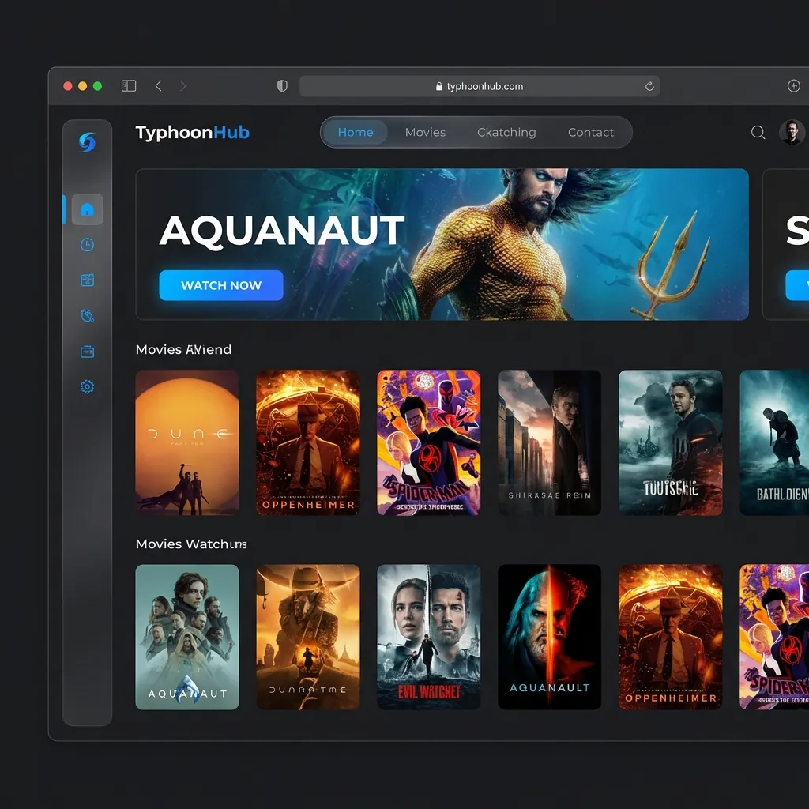

TyphoonHub: From Messy to Masterpiece
A fully custom film streaming and portfolio platform built for Typhoon Entertainment. Features a rich video library, advanced dark mode, and a mobile-first responsive layout.
⚠️ The Problem
Large video files were difficult to share with producers and clients, and the previous site was slow and not mobile-ready.
✅ The Solution (Built From Scratch)
A custom streaming platform with cloud video hosting and a 'Netflix-style' interface for seamless mobile viewing. Unlike bloated templates, this was hand-coded for speed, security, and specific business needs.
The Result
"Victor built a site that actually works. Best investment we made this year."

View Live Site ↗Ready for these results?
Get your professional, hand-coded website built in just 5 days. No monthly fees, no bloat.
Call Victor Now: 778-347-8067